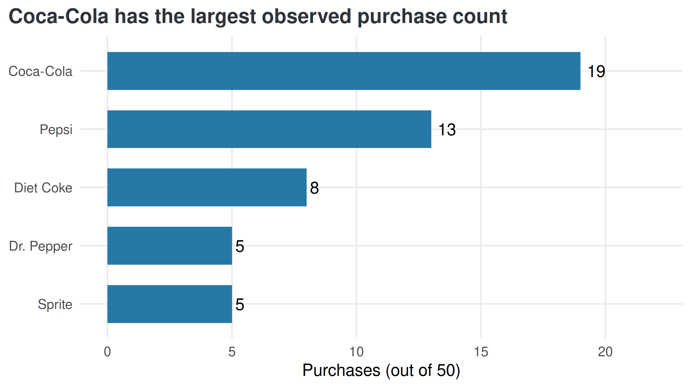
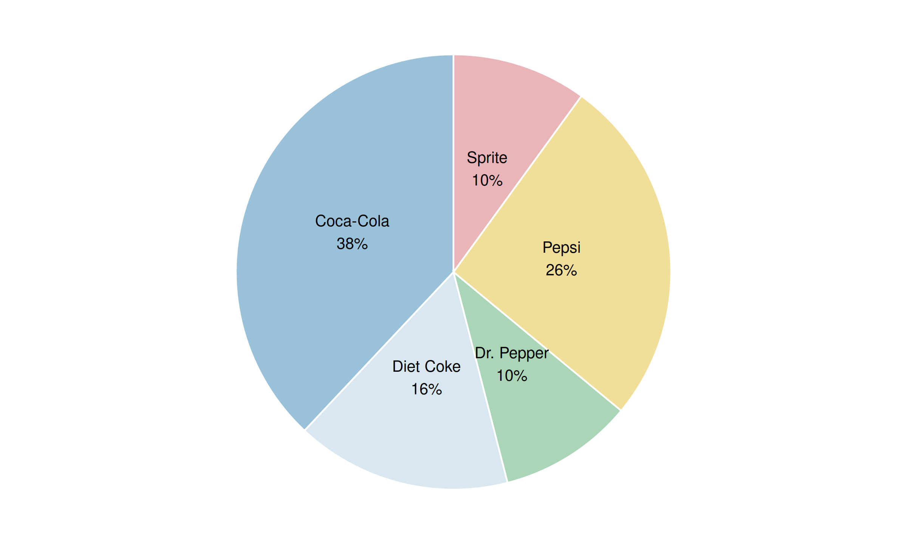
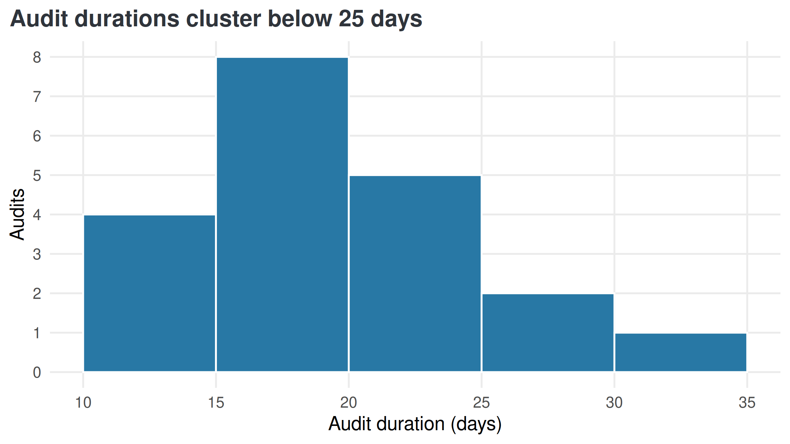
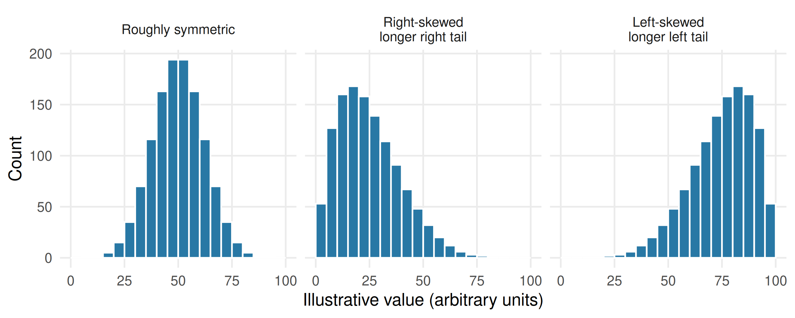
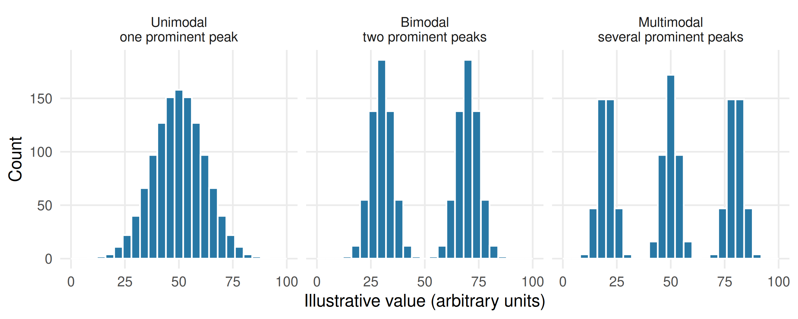
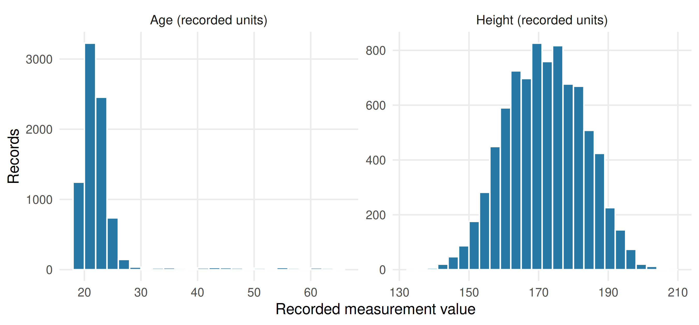
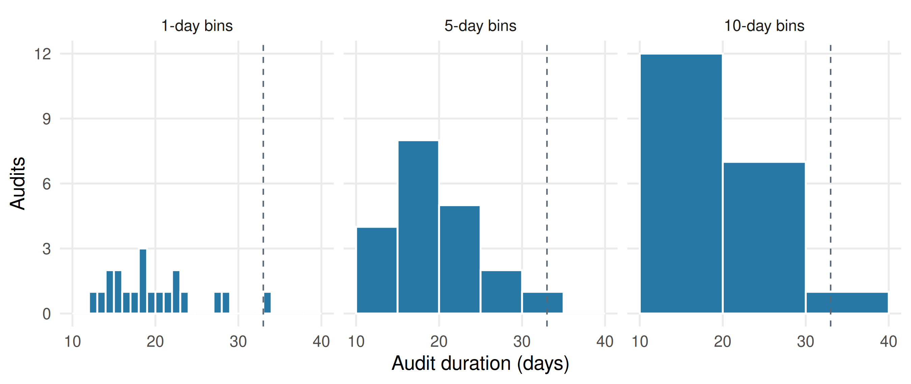
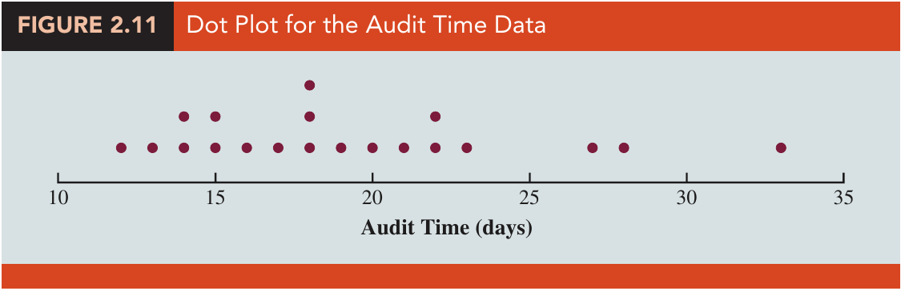
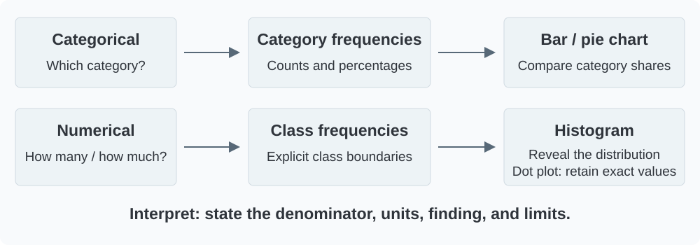

Lesson 2 | Turn observations into a clear description
What we will learn
Lesson 1 introduced the toolbox. Here we use its first two tools in detail: tables organize the observations; charts help us see their pattern.
By the end of this lesson, you should be able to:
Construct frequency, relative-frequency, and percentage tables.
Choose a useful order for categorical bars.
Explain when a pie chart can represent a whole.
Define numerical classes without gaps or overlaps.
Read a histogram for shape, skewness, modality, center, spread, and unusual features.
Construct and interpret a histogram and cumulative frequency table.
Write a short business interpretation with an appropriate limit on the conclusion.
Reading: main 8th-edition book, §2.1, printed pp.37–42, and §2.2, pp.47–55. Our wording and R analyses are course material based on these textbook examples.
Business case: which soft drinks were purchased?
A manager wants a clear description of the brands selected in 50 soft-drink purchases. Which brand was purchased most often, and what proportion of purchases did each brand represent? The book records purchases of five brands; one observation is one purchase, not necessarily one distinct customer.
يريد مدير أن يحصل على وصف واضح للعلامات التجارية المختارة في خمسين عملية شراء لمشروبات غازية. ما العلامة الأكثر شراءً، وما نسبة عمليات الشراء التي تمثلها كل علامة؟ يتضمن مثال الكتاب خمس علامات تجارية، وتمثل كل مشاهدة عملية شراء واحدة، وليس بالضرورة عميلًا مختلفًا.
Download the CSV. Use brand_book_label for the book’s category names. The CSV also preserves brand_original: Coke Classic is mapped to Coca-Cola and Pepsi-Cola to Pepsi. This is a documented label alignment, not a change to the counts.
Show R code
# read.csv() imports the teaching file as a data frame with named columns.# The $ operator selects brand_book_label, the documented textbook-label column.soft <-read.csv("data/module02/soft_drinks.csv")# Use this column for the textbook's category labels:soft$brand_book_label
From observations to a frequency table
A frequency is the number of observations assigned to a category or numerical class. A frequency distribution lists those categories or classes together with their counts.
For one categorical variable, each observation must belong to exactly one category. Check that categories are consistently named, missing values are handled explicitly, and no record is counted twice. An omitted category with zero observations can still be relevant to the question.
For a dataset of size \(n\) and a category frequency \(f\):
A relative frequency is a proportion, such as 0.38. Its percentage equivalent is 38%, not 0.38%.
Show R code
# names(): reads or assigns names to vector elements or table columns.# c(): combines values into a vector, converting them to a common type when needed.# stopifnot(): stops execution if any supplied condition is FALSE; successful checks produce no output.# identical(): requires exact equality of values, types, and attributes.# as.integer(): converts to integers by truncating numeric fractional parts; it does not round to nearest.# sum(): adds vector entries; on logical values it counts TRUE entries.# abs(): returns absolute values; a small tolerance in an equality check permits floating-point rounding.# kable(): formats a data frame or matrix as a readable report table; digits sets displayed precision.# table() counts brand occurrences; as.data.frame() turns the counts into columns.# Divide by nrow(soft) for proportions and multiply by 100 for percentages.brand_table <-as.data.frame(table(soft$brand))names(brand_table) <-c("Brand", "Frequency")brand_table$Relative_frequency <- brand_table$Frequency /nrow(soft)brand_table$Percent <-100* brand_table$Relative_frequencystopifnot(identical(as.integer(brand_table$Frequency), c(19L, 8L, 5L, 13L, 5L)),sum(brand_table$Frequency) ==50,abs(sum(brand_table$Relative_frequency) -1) <1e-12)kable(brand_table, digits =c(0, 0, 2, 0),col.names =c("Brand", "Frequency", "Relative frequency", "Percent (%)"))
Brand
Frequency
Relative frequency
Percent (%)
Coca-Cola
19
0.38
38
Diet Coke
8
0.16
16
Dr. Pepper
5
0.10
10
Pepsi
13
0.26
26
Sprite
5
0.10
10
The count total is 50, the relative-frequency total is 1, and the percentage total is 100%. Display rounding can sometimes make percentages add to slightly more or less than 100%; calculate from the unrounded values.
Interpretation: Coca-Cola accounts for 19 of 50 purchases (38%), the largest observed share. This describes the sample of purchases; it does not establish a market share for all consumers or measure profit.
Check: Pepsi represents 13 purchases. Calculate its relative frequency and percentage before expanding the code.
Bar charts: compare categories
A bar chart places categories on one axis and their counts or percentages on the other. The bars are separated because categories are distinct. The length of each bar communicates the quantity, so the quantitative axis should start at zero.
Nominal brands have no inherent ranking. Alphabetical order is reasonable for lookup; descending frequency makes a popularity comparison easier. For ordinal categories, retain their meaningful order rather than sorting them by frequency.
Show R code
# as.character(): converts values to character text; for a factor it returns displayed category labels.# rev(): reverses the order of a vector.# ggplot(): starts a plot from data; additional layers are joined with +.# aes(): maps variables to visual properties such as x, y, fill, color, or group.# scale_x_continuous(): controls numeric x-axis breaks, labels, limits, and spacing.# c(): combines values into a vector, converting them to a common type when needed.# seq(): creates an equally spaced sequence; by sets spacing and length.out sets the number of values.# labs(): sets axis titles, legend titles, plot titles, and captions.# order() ranks the frequency rows; factor() fixes the displayed category order.# geom_col() plots the supplied counts and geom_text() places their labels.ranked <- brand_table[order(-brand_table$Frequency, as.character(brand_table$Brand)), ]ranked$Brand <-factor(ranked$Brand, levels =rev(as.character(ranked$Brand)))ggplot(ranked, aes(Frequency, Brand)) +geom_col(fill ="#2878A5", width = .65) +geom_text(aes(label = Frequency), hjust =-.35) +scale_x_continuous(limits =c(0, 22), breaks =seq(0, 20, 5)) +labs(title ="Coca-Cola has the largest observed purchase count",x ="Purchases (out of 50)", y =NULL)

Figure 1: Original R chart from the checked SoftDrink CSV. Counts match book Table 2.2, printed p.38.
The same counts can be shown as percentages. Do not treat counts and percentages from this one sample as separate findings: one is a rescaling of the other.
Pie charts: show shares of one whole
A pie chart divides a circle into slices whose angles represent proportions of a whole. A 38% share has an angle of \(0.38\times360^\circ=136.8^\circ\).
Use it only when categories describe nonoverlapping parts of one clearly defined total. With many categories or similar shares, bars are easier to compare. Use a flat display and direct labels; 3D perspective can distort apparent slice sizes.
Show R code
# paste0(): joins text with no separator; collapse can combine a vector into one string.# ggplot(): starts a plot from data; additional layers are joined with +.# aes(): maps variables to visual properties such as x, y, fill, color, or group.# geom_col(): draws bars at supplied heights; it does not count records.# geom_text(): draws labels from mapped data; position and hjust/vjust control placement.# scale_fill_manual(): assigns explicit fill colors to categories; named values preserve category-color mappings.# c(): combines values into a vector, converting them to a common type when needed.# theme_void(): removes axes and most non-data decoration.# theme(): customizes non-data plot elements such as legends, grids, and axis text.# coord_polar(theta = "y") turns the stacked percentage bar into a circle.# position_stack(vjust = .5) centers each label within its corresponding slice.pie_data <- brand_tablepie_data$label <-paste0(pie_data$Brand, "\n", pie_data$Percent, "%")ggplot(pie_data, aes(x ="", y = Percent, fill = Brand)) +geom_col(width =1, colour ="white") +coord_polar(theta ="y") +geom_text(aes(label = label), position =position_stack(vjust = .5), size =3.5) +scale_fill_manual(values =c("#99C1D9", "#D9E8F0", "#AAD5B7", "#F1DE99", "#E9B5B9")) +theme_void() +theme(legend.position ="none")

Figure 2: Original R chart: the same 50 purchases shown as percentages of one whole. Colors distinguish categories; they do not encode a ranking.
Discussion: Which display makes the tie between Sprite and Dr. Pepper easier to assess? Which is easier to read when brand names are long?
Percentages need a denominator
Always name the whole: here it is 50 recorded purchases. If comparing datasets with different sample sizes, percentages can be more useful than raw counts, but differences in sampling and population coverage still matter.
Do not cumulatively add nominal categories as though they form a natural numerical progression. Adding the three most frequent brands can answer a stated “top three” question; the order is an analytical choice, not a property of the brand variable. Here the three largest shares total 80%.
Business case: how long do audits take?
An accounting firm wants to describe the completion times of 20 year-end audits, recorded in days. Which duration ranges occur most often, and how many audits finish before a chosen threshold? One observation is one audit. These data support a description of recorded durations, not a promise about a future client’s completion date.
يريد مكتب محاسبة وصف المدد اللازمة لإنجاز عشرين عملية تدقيق لنهاية السنة، والمسجّلة بالأيام. ما فئات المدة الأكثر تكرارًا، وكم عملية تدقيق انتهت قبل حد زمني محدد؟ تمثل كل مشاهدة عملية تدقيق واحدة. تصف هذه البيانات المدد المسجّلة، ولا تقدّم وعدًا بموعد إنجاز عملية تدقيق لعميل في المستقبل.
Download the Audit CSV. The variable audit_days contains all 20 values printed in book Table 2.4, p.47.
Show R code
# c(): combines values into a vector, converting them to a common type when needed.# seq_len(nrow(audit)) creates one row number for each recorded audit.# data.frame() pairs row numbers with durations; kable() prints the table.kable(data.frame(Audit =seq_len(nrow(audit)), Days = audit$audit_days),col.names =c("Audit (row number)", "Duration (days)"))
Audit (row number)
Duration (days)
1
12
2
15
3
20
4
22
5
14
6
14
7
15
8
27
9
21
10
18
11
19
12
18
13
22
14
33
15
16
16
18
17
17
18
23
19
28
20
13
Group numerical values into classes
Grouping replaces individual values with ranges. It makes patterns easier to see, but loses detail: a grouped table does not tell us every exact value inside a range.
Choose a number of classes, a convenient width, and boundaries that cover all observations. For Audit, the smallest value is 12 and the largest is 33 days. With five classes, an initial width estimate is \((33-12)/5=4.2\) days. Following the book, use a convenient 5-day width, starting at 10 days.
Our intervals are [10,15), [15,20), [20,25), [25,30), [30,35). A square bracket includes the boundary; a round bracket excludes it. Thus, 15 belongs to [15,20), while 20 belongs to [20,25). For these whole-day records, these groups reproduce the book’s 10–14, 15–19, 20–24, 25–29, and 30–34 classes.
NoteClass rules
Every value must fall into exactly one class. Avoid gaps, overlap, or an uncovered maximum. Retain empty classes when they are part of the chosen numerical scale. There is no universally best number of classes: check that your choice reveals rather than hides the distribution.
Show R code
# as.data.frame(): converts an object to a rectangular data frame.# names(): reads or assigns names to vector elements or table columns.# c(): combines values into a vector, converting them to a common type when needed.# nrow(): returns the number of rows in a table or matrix.# stopifnot(): stops execution if any supplied condition is FALSE; successful checks produce no output.# anyNA(): returns TRUE if any value is missing; !anyNA(...) requires no missing values.# sum(): adds vector entries; on logical values it counts TRUE entries.# identical(): requires exact equality of values, types, and attributes.# as.integer(): converts to integers by truncating numeric fractional parts; it does not round to nearest.# kable(): formats a data frame or matrix as a readable report table; digits sets displayed precision.# seq(10,35,5) sets class boundaries; cut() assigns each audit to an interval.# right = FALSE gives [lower, upper) classes; table() counts each class.boundaries <-seq(10, 35, 5)audit$class <-cut(audit$audit_days, breaks = boundaries, right =FALSE)audit_table <-as.data.frame(table(audit$class))names(audit_table) <-c("Days", "Frequency")audit_table$Relative_frequency <- audit_table$Frequency /nrow(audit)audit_table$Percent <-100* audit_table$Relative_frequencystopifnot(!anyNA(audit$class), sum(audit_table$Frequency) ==20,identical(as.integer(audit_table$Frequency), c(4L, 8L, 5L, 2L, 1L)))kable(audit_table, digits =c(0, 0, 2, 0),col.names =c("Duration class (days)", "Frequency", "Relative frequency", "Percent (%)"))
Duration class (days)
Frequency
Relative frequency
Percent (%)
[10,15)
4
0.20
20
[15,20)
8
0.40
40
[20,25)
5
0.25
25
[25,30)
2
0.10
10
[30,35)
1
0.05
5
The 15–<20-day class is the most frequent: 8 audits, or 40%. This identifies a modal class, not an exact modal duration.
Histograms: reveal the numerical distribution
A histogram places numerical intervals on the horizontal axis. With equal-width intervals, bar heights can represent counts directly. The rectangles are adjacent because they represent neighboring intervals on a numerical scale.
Show R code
# ggplot(): starts a plot from data; additional layers are joined with +.# aes(): maps variables to visual properties such as x, y, fill, color, or group.# scale_x_continuous(): controls numeric x-axis breaks, labels, limits, and spacing.# scale_y_continuous(): controls numeric y-axis breaks, labels, limits, and spacing.# labs(): sets axis titles, legend titles, plot titles, and captions.# geom_histogram() counts the raw days using the same boundaries as the table.# closed = "left" keeps the histogram and cut(..., right = FALSE) consistent.ggplot(audit, aes(audit_days)) +geom_histogram(breaks = boundaries, closed ="left",fill ="#2878A5", colour ="white") +scale_x_continuous(breaks = boundaries) +scale_y_continuous(breaks =0:8) +labs(title ="Audit durations cluster below 25 days",x ="Audit duration (days)", y ="Audits")

Figure 3: Original R histogram using the same five classes as the table; frequencies match book Table 2.5, printed p.49.
Read the shape, the concentration of values, the extent of the spread, and any gaps or isolated observations. Here, most observations lie below 25 days, with fewer audits at longer durations. Investigate the 33-day observation in context rather than deleting it because it is longer.
What does a distribution tell us?
A distribution describes how the observations are spread across possible values: which regions contain many observations, which contain few, and where gaps occur. A histogram groups that information into intervals. Its horizontal axis shows the measured values; its vertical axis shows counts, proportions, or densities as labeled. It does not show changes over time unless time itself is the measured variable.
Read a histogram through four questions:
Feature
Question to ask
What the histogram can suggest
Shape
Is the distribution balanced or skewed? How many peaks are apparent?
Symmetry, tail direction, and possible clusters
Center
Where is a typical region?
An approximate central location; exact means and medians require the data
Spread
How far do values extend and concentrate around the center?
Narrow or broad variation, interpreted with the horizontal scale
Unusual features
Are there gaps, isolated values, or small separated groups?
Observations or patterns to investigate
Two histograms can look equally wide while using different axis scales. Always read the values and units before comparing their spread.
Skewness: name the direction of the longer tail
A roughly symmetric distribution has similar shapes on either side of its center. Right (positive) skewness means the longer tail extends toward larger values; left (negative) skewness means it extends toward smaller values. Name the direction from the tail, not from the location of the tallest bars.
Show R code
# seq_len(): returns integer positions 1 through n, safely returning an empty vector when n=0.# c(): combines values into a vector, converting them to a common type when needed.# data.frame(): builds a table whose named columns have compatible lengths.# factor(): stores categorical values; levels fixes their permitted order and labels can rename their display.# rep(): repeats values; times repeats a vector and each repeats individual elements.# stopifnot(): stops execution if any supplied condition is FALSE; successful checks produce no output.# all(): returns TRUE only when every supplied logical value is TRUE.# ggplot(): starts a plot from data; additional layers are joined with +.# aes(): maps variables to visual properties such as x, y, fill, color, or group.# geom_histogram(): bins numeric observations; binwidth or breaks controls the intervals and boundary anchors them.# seq(): creates an equally spaced sequence; by sets spacing and length.out sets the number of values.# facet_wrap(): splits the plot into panels defined by a categorical formula.# scale_x_continuous(): controls numeric x-axis breaks, labels, limits, and spacing.# labs(): sets axis titles, legend titles, plot titles, and captions.# theme(): customizes non-data plot elements such as legends, grids, and axis text.# element_text(): sets text appearance; size uses points and angle rotates labels.# qnorm() and qbeta() generate artificial values at evenly spaced probabilities.# Reflecting the right-skewed values creates the left-skewed comparison; these are not observed cases.p <- (seq_len(1200) - .5) /1200symmetric_example <-qnorm(p, mean =50, sd =12)right_example <-100*qbeta(p, shape1 =2, shape2 =6)shape_labels <-c("Roughly symmetric", "Right-skewed\nlonger right tail", "Left-skewed\nlonger left tail")shape_examples <-data.frame(Value =c(symmetric_example, right_example, 100-right_example),Pattern =factor(rep(shape_labels, each =1200), levels = shape_labels))stopifnot(all(shape_examples$Value >0& shape_examples$Value <100))ggplot(shape_examples, aes(Value)) +geom_histogram(breaks =seq(0,100,5), closed ="left", fill ="#2878A5", colour ="white") +facet_wrap(~Pattern, nrow =1) +scale_x_continuous(breaks =seq(0,100,25)) +labs(x ="Illustrative value (arbitrary units)", y ="Count") +theme(strip.text =element_text(size =11))

Figure 4: Original illustrations constructed from model quantiles, with 1,200 artificial values per panel. These are teaching patterns, not observed students or textbook records. Bin widths and axes are shared.
For example, a few unusually long service durations can produce a right tail; many high scores with a few low scores can produce a left tail. These are possible interpretations, not explanations established by the shape alone. In many familiar one-peaked skewed distributions, the mean is pulled toward the long tail; the plot alone does not prove a universal ordering of mean and median. A symmetric histogram does not by itself establish a normal distribution.
Modality: count prominent peaks, not every uneven bar
A unimodal distribution has one prominent peak; bimodal has two; multimodal has several. Here, a mode is a prominent region of the distribution, not necessarily the most frequent exact recorded value.
Show R code
# length(): counts elements in a vector or list.# seq_len(): returns integer positions 1 through n, safely returning an empty vector when n=0.# unlist(): flattens a list into a vector, converting entries to a common type as needed.# qnorm(): returns a normal lower-tail quantile; sd is standard deviation, not variance.# c(): combines values into a vector, converting them to a common type when needed.# data.frame(): builds a table whose named columns have compatible lengths.# make_components(): is a locally defined helper building explicitly conceptual distribution examples, not observed data.# factor(): stores categorical values; levels fixes their permitted order and labels can rename their display.# rep(): repeats values; times repeats a vector and each repeats individual elements.# stopifnot(): stops execution if any supplied condition is FALSE; successful checks produce no output.# all(): returns TRUE only when every supplied logical value is TRUE.# ggplot(): starts a plot from data; additional layers are joined with +.# aes(): maps variables to visual properties such as x, y, fill, color, or group.# geom_histogram(): bins numeric observations; binwidth or breaks controls the intervals and boundary anchors them.# seq(): creates an equally spaced sequence; by sets spacing and length.out sets the number of values.# scale_x_continuous(): controls numeric x-axis breaks, labels, limits, and spacing.# labs(): sets axis titles, legend titles, plot titles, and captions.# theme(): customizes non-data plot elements such as legends, grids, and axis text.# element_text(): sets text appearance; size uses points and angle rotates labels.# The helper combines artificial normal-component values with chosen centers.# lapply() builds each component and facet_wrap() separates the modality examples.make_components <-function(centers, spread) { count <-1200/length(centers) prob <- (seq_len(count)-.5)/countunlist(lapply(centers, function(center) qnorm(prob, center, spread)))}mode_labels <-c("Unimodal\none prominent peak", "Bimodal\ntwo prominent peaks", "Multimodal\nseveral prominent peaks")mode_examples <-data.frame(Value =c(symmetric_example, make_components(c(30,70),5), make_components(c(20,50,80),3.5)),Pattern =factor(rep(mode_labels, each =1200), levels = mode_labels))stopifnot(all(mode_examples$Value >0& mode_examples$Value <100))ggplot(mode_examples, aes(Value)) +geom_histogram(breaks =seq(0,100,4), closed ="left", fill ="#2878A5", colour ="white") +facet_wrap(~Pattern, nrow =1) +scale_x_continuous(breaks =seq(0,100,25)) +labs(x ="Illustrative value (arbitrary units)", y ="Count") +theme(strip.text =element_text(size =11))

Figure 5: Original illustrations, each containing 1,200 artificial values. The multi-peak patterns combine constructed groups; such a mechanism cannot be inferred from an observed histogram alone.
Several peaks can suggest mixed groups or different operating conditions worth investigating. They do not prove that those groups exist. Sampling variation, rounding, bin width, and bin starting points can produce or obscure apparent peaks. Small fluctuations between adjacent bars are not automatically separate modes.
Additional comparison: recorded student ages and heights
The local teaching workbook contains 8,239 records with age and height columns. We exported only those two measurements, without names or identifiers. Its population, collection method, and measurement-unit metadata are not documented locally, so the axes retain recorded units. This is a supplementary shape-reading example, not a verified university survey or a textbook dataset.
# stopifnot(): stops execution if any supplied condition is FALSE; successful checks produce no output.# nrow(): returns the number of rows in a table or matrix.# anyNA(): returns TRUE if any value is missing; !anyNA(...) requires no missing values.# identical(): requires exact equality of values, types, and attributes.# names(): reads or assigns names to vector elements or table columns.# c(): combines values into a vector, converting them to a common type when needed.# rbind(): combines compatible vectors or tables by adding rows.# data.frame(): builds a table whose named columns have compatible lengths.# factor(): stores categorical values; levels fixes their permitted order and labels can rename their display.# do.call(): calls a function using a list of arguments, e.g. rbind to combine a list of tables.# lapply(): applies a function separately to each element and returns a list.# levels(): reads or replaces the category labels and order of a factor.# startsWith(): checks whether each text value begins with a specified prefix.# seq(): creates an equally spaced sequence; by sets spacing and length.out sets the number of values.# hist(): bins numeric values; breaks controls intervals and plot=FALSE returns counts without drawing.# sum(): adds vector entries; on logical values it counts TRUE entries.# head(): shows the first n entries or rows, six by default.# tail(): shows the last n entries or rows, six by default.# ggplot(): starts a plot from data; additional layers are joined with +.# aes(): maps variables to visual properties such as x, y, fill, color, or group.# geom_rect(): draws rectangles using xmin, xmax, ymin, and ymax.# facet_wrap(): splits the plot into panels defined by a categorical formula.# labs(): sets axis titles, legend titles, plot titles, and captions.# theme(): customizes non-data plot elements such as legends, grids, and axis text.# element_text(): sets text appearance; size uses points and angle rotates labels.# read.csv() loads the two exported measurements; stopifnot() checks their structure.# The panels use different bin widths and recorded units, so compare shapes rather than bar heights.students_hist <-read.csv("data/module02/student_age_height.csv")stopifnot(nrow(students_hist)==8239, !anyNA(students_hist),identical(names(students_hist),c("age","height")))student_values <-rbind(data.frame(Variable="Age (recorded units)", Value=students_hist$age),data.frame(Variable="Height (recorded units)", Value=students_hist$height))student_values$Variable <-factor(student_values$Variable,levels=c("Age (recorded units)","Height (recorded units)"))student_bins <-do.call(rbind, lapply(levels(student_values$Variable), function(label) { vals <- student_values$Value[student_values$Variable==label] breaks <-if (startsWith(label,"Age")) seq(18,66,2) elseseq(132,210,3) h <-hist(vals, breaks=breaks, right=FALSE, plot=FALSE)stopifnot(sum(h$counts)==8239)data.frame(Variable=label, Left=head(h$breaks,-1), Right=tail(h$breaks,-1), Count=h$counts)}))student_bins$Variable <-factor(student_bins$Variable, levels=levels(student_values$Variable))ggplot(student_bins, aes(xmin=Left,xmax=Right,ymin=0,ymax=Count)) +geom_rect(fill="#2878A5",colour="white") +facet_wrap(~Variable,scales="free",nrow=1) +labs(x="Recorded measurement value",y="Records") +theme(strip.text=element_text(size=12))

Figure 6: Original histograms from the local students worksheet (8,239 values per variable; no missing values in these two columns). Age bins have width 2 recorded units and height bins width 3. Each panel has its own axis scales; different scales and bin widths mean bar heights and visual widths should not be compared directly.
The age values show a long right tail: most are near the lower end, while relatively few extend to 64. The heights have a more balanced central concentration. Small bumps do not establish separate populations or exact normality. Higher ages or extreme heights are not errors merely because they are uncommon; source definitions and individual records would need checking.
Unusual observations and the effect of bins
A histogram may reveal isolated bars, gaps, or a small separated group. Call these potential unusual observations until you examine the raw values and context. There is no universal histogram-only cutoff for an outlier. Lesson 3 introduces a stated IQR screening rule, which is a separate procedure.
Compare the same 20 Audit values with three class widths. The dashed line marks the observed 33-day audit, not an outlier threshold.
Show R code
# list(): stores named or unnamed objects that may have different types and lengths.# seq(): creates an equally spaced sequence; by sets spacing and length.out sets the number of values.# do.call(): calls a function using a list of arguments, e.g. rbind to combine a list of tables.# names(): reads or assigns names to vector elements or table columns.# stopifnot(): stops execution if any supplied condition is FALSE; successful checks produce no output.# sum(): adds vector entries; on logical values it counts TRUE entries.# data.frame(): builds a table whose named columns have compatible lengths.# head(): shows the first n entries or rows, six by default.# tail(): shows the last n entries or rows, six by default.# factor(): stores categorical values; levels fixes their permitted order and labels can rename their display.# ggplot(): starts a plot from data; additional layers are joined with +.# aes(): maps variables to visual properties such as x, y, fill, color, or group.# geom_rect(): draws rectangles using xmin, xmax, ymin, and ymax.# geom_vline(): adds vertical references at xintercept; linetype selects solid or dashed lines.# facet_wrap(): splits the plot into panels defined by a categorical formula.# scale_x_continuous(): controls numeric x-axis breaks, labels, limits, and spacing.# c(): combines values into a vector, converting them to a common type when needed.# scale_y_continuous(): controls numeric y-axis breaks, labels, limits, and spacing.# labs(): sets axis titles, legend titles, plot titles, and captions.# lapply() repeats the grouping for three bin-width specifications without changing audit values.# hist(..., plot = FALSE) counts left-closed bins without drawing; the panels share a frequency scale.audit_bin_specs <-list("1-day bins"=seq(10,40,1),"5-day bins"=seq(10,40,5),"10-day bins"=seq(10,40,10))audit_bin_comparison <-do.call(rbind,lapply(names(audit_bin_specs),function(label){ h <-hist(audit$audit_days,breaks=audit_bin_specs[[label]],right=FALSE,plot=FALSE)stopifnot(sum(h$counts)==20)data.frame(Bins=label,Left=head(h$breaks,-1),Right=tail(h$breaks,-1),Count=h$counts)}))audit_bin_comparison$Bins <-factor(audit_bin_comparison$Bins,levels=names(audit_bin_specs))ggplot(audit_bin_comparison,aes(xmin=Left,xmax=Right,ymin=0,ymax=Count)) +geom_rect(fill="#2878A5",colour="white") +geom_vline(xintercept=33,linetype="dashed",colour="#596775",linewidth=.5) +facet_wrap(~Bins,nrow=1) +scale_x_continuous(breaks=c(10,20,30,40)) +scale_y_continuous(breaks=c(0,3,6,9,12)) +labs(x="Audit duration (days)",y="Audits")

Figure 7: Original R comparison of the unchanged Audit data. Widths of 1, 5, and 10 days change the apparent detail and prominence of gaps. Every panel contains all 20 audits.
The data did not change. The display changed. Check more than one sensible bin width and starting point before making a claim about a small peak, gap, or unusual group. Count heights rise as bins combine observations; a taller bar in a wider-bin panel is not evidence of more audits overall.
Read the Audit histogram in four sentences
Shape: most values are in the lower-duration classes, with a longer tail toward larger durations; the five-day grouping has one prominent peak.
Center: a typical region appears around the high teens. Calculate from the CSV to obtain the exact mean (19.25 days) and median (18 days).
Spread: the recorded durations run from 12 to 33 days. The histogram groups them; standard deviation and IQR quantify other aspects of spread in Lesson 3.
Unusual features: the 33-day observation and the sparsely occupied upper end deserve context, not automatic deletion. Smaller bins and the dot plot show the individual values more clearly.
Keep the individual values in view
The book’s dot plot complements the histogram: each dot represents one audit, preserving repeated and individual durations that grouping hides.

Book Figure 2.11: Audit time dot plot, printed p.52. Anderson et al., Essentials of Modern Business Statistics with Microsoft Excel, 8th ed. Copyright 2020 Cengage Learning.
Bar chart or histogram?
Feature
Bar chart
Histogram
Horizontal meaning
Distinct categories
Numerical intervals
Order
Choose a useful order; retain ordinal order
Keep numerical order
Separation
Gaps distinguish categories
Adjacent class rectangles
What width means
Usually decorative and consistent
Represents interval width
Primary question
How common is each category?
How are numerical values distributed?
If class widths differ, counts as heights can mislead: histogram area, rather than height alone, must represent frequency. Density height equals frequency divided by class width (or relative frequency divided by class width). We use equal widths here so count heights are appropriate.
Cumulative frequencies: answer a threshold question
A cumulative frequency adds the counts in successive numerical classes. It answers “how many observations fall below this boundary?” The denominator remains 20 audits.
Show R code
# data.frame(): builds a table whose named columns have compatible lengths.# paste(): joins text using sep between pieces; collapse combines a vector into one string.# stopifnot(): stops execution if any supplied condition is FALSE; successful checks produce no output.# identical(): requires exact equality of values, types, and attributes.# as.integer(): converts to integers by truncating numeric fractional parts; it does not round to nearest.# c(): combines values into a vector, converting them to a common type when needed.# sum(): adds vector entries; on logical values it counts TRUE entries.# kable(): formats a data frame or matrix as a readable report table; digits sets displayed precision.# cumsum() adds frequencies successively to count observations below each upper boundary.# Divide those running totals by nrow(audit) and multiply by 100 for cumulative percentages.cumulative <-data.frame(Threshold =paste("Less than", boundaries[-1], "days"),Audits =cumsum(audit_table$Frequency),Percent =100*cumsum(audit_table$Frequency) /nrow(audit))stopifnot(identical(as.integer(cumulative$Audits), c(4L,12L,17L,19L,20L)),sum(audit$audit_days <25) ==17)kable(cumulative, digits =0, col.names =c("Duration threshold", "Cumulative audits", "Cumulative percent (%)"))
Duration threshold
Cumulative audits
Cumulative percent (%)
Less than 15 days
4
20
Less than 20 days
12
60
Less than 25 days
17
85
Less than 30 days
19
95
Less than 35 days
20
100
Interpretation: 17 of the 20 recorded audits (85%) took less than 25 days. The remaining three (15%) took at least 25 days.
The grouped table cannot give an exact count below a threshold inside a class, such as 18 days. For that question, return to the CSV rather than assume values are evenly spread across the class. Similarly, “less than 20” and “20 or less” have different meanings when a 20-day observation is present.
Summary: choose and explain the display

Original course summary: identify the variable, organize frequencies, choose a matching display, and interpret with a denominator and units.
Before handing a chart to a manager, check:
Meaning: the observation, variable, units, and denominator are clear.
Construction: categories or classes are suitable; counts reconcile to the data.
Display: labels, order, baseline, and widths support a fair comparison.
Interpretation: describe what the sample shows and avoid unsupported forecasts or causal claims.
Main source: Anderson et al. (2020), Essentials of Modern Business Statistics with Microsoft Excel, 8th ed., §§2.1–2.2. SoftDrink counts and proportions: Tables 2.2–2.3, p.38; Audit observations: Table 2.4, p.47; grouped frequencies: Tables 2.5–2.6, p.49; dot plot: Figure 2.11, p.52; cumulative distributions: pp.55–56.
Artificial shape/modality plots are original teaching illustrations. Student age/height plots use a separate local teaching file with undocumented population and unit metadata; see the linked source notes. They are not attributed to the main textbook.
SoftDrink category totals match after the documented label alignment; row order is not asserted to match the printed table. Audit matches all 20 printed observations. Original R charts are distinguished from the attributed book figure.